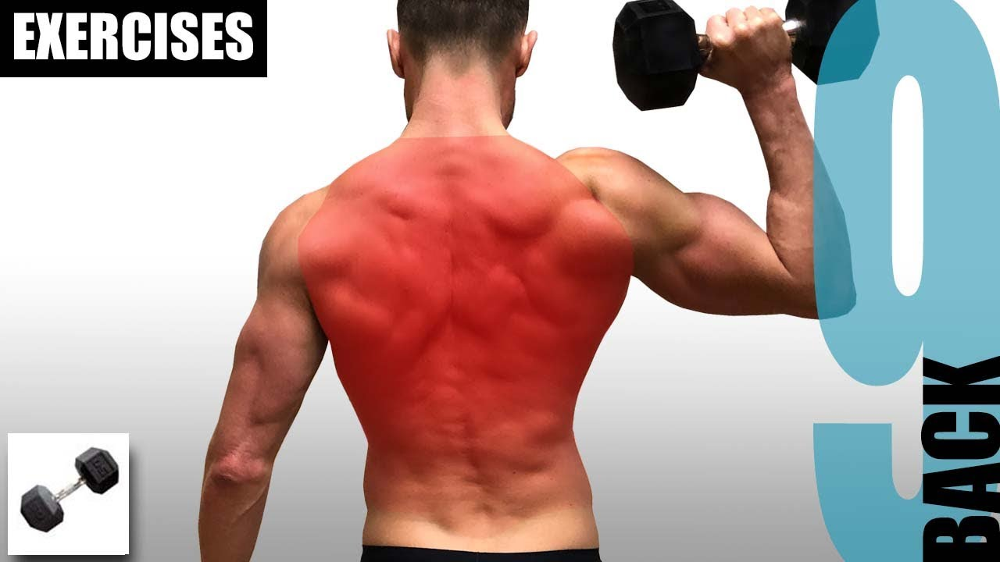
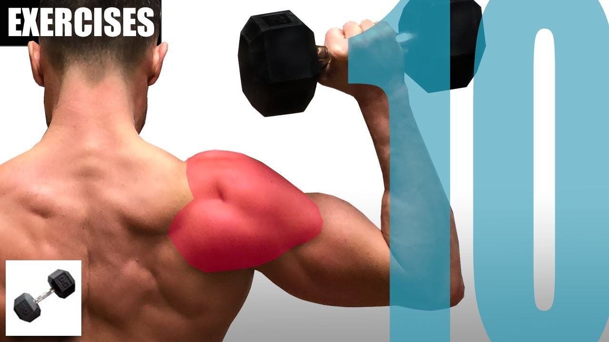
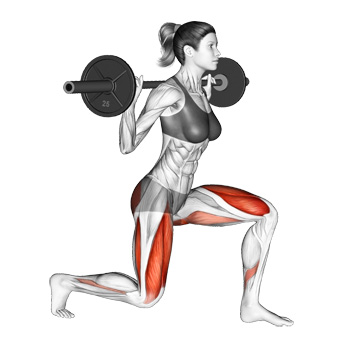
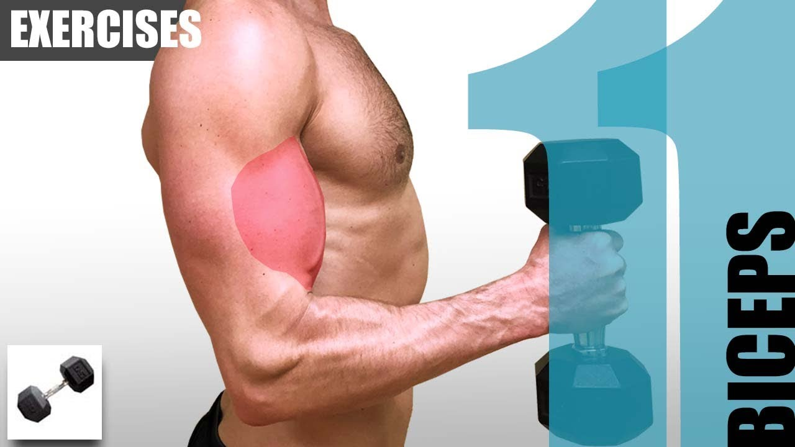
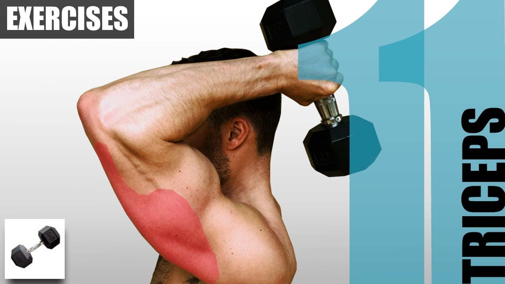

In this section of page there will be given examples of how to workout for each body part
Chest

- Flat bench press (3 sets)
- 10 to 12 repetition (keep the motion slow when bringing the weight down and up in a controlled state)
- Incline bench press (3 sets)
- 10 to 12 repetition (keep the motion slow when bringing the weight down and up in a controlled state)
- Decline bench press (3 sets)
- 10 to 12 repetition (keep the motion slow when bringing the weight down and up in a controlled state)
- Fly flat bench press (3 sets)
- 10 to 12 repetition (keep the motion slow when bringing the weight down and up in a controlled state)
- Fly incline bench press (3 sets)
- 10 to 12 repetition (keep the motion slow when bringing the weight down and up in a controlled state)
Back
- Resistance band pull apart (3 sets)
- 10 to 12 repetition (keep the motion slow when pulling the resistance bands apart in a controlled state)
- Single-arm dumbell row (3 sets)
- 10 to 12 repetition (keep the motion slow when bringing the weight down and up in a controlled state)
- Lat pulldown (3 sets)
- 10 to 12 repetition (keep the motion slow when pulling the weight down and up in a controlled state)
- Wide dumbbell row (3 sets)
- 10 to 12 repetition (keep the motion slow when pulling the dumbells up in a controlled state)
- Barebell deadlift (3 sets)
- 10 to 12 repetition (keep the motion slow when pulling the bar up and down in a controlled state)
Shoulders
- Barbell overhead press (3 sets)
- 10 to 12 repetition (keep the motion slow when pushing the bar up and down in a controlled state)
- Standing dumbell fly (3 sets)
- 10 to 12 repetition (keep the motion slow when swinging the dumbell up a few inches in a controlled state)
- High pull (3 sets)
- 10 to 12 repetition (keep the motion slow when pulling the bar up and down in a controlled state)
- Dumbell Shrug (3 sets)
- 10 to 12 repetition (keep the motion slow when pulling the dumbell up and down in a controlled state)
- Machine shoulder press (3 sets)
- 10 to 12 repetition (keep the motion slow when pushing the weight up and down in a controlled state)
Legs
- Squats (3 sets)
- 10 to 12 repetition (keep the motion slow when bringing the weight up and down in a controlled state)
- Lunges (3 sets)
- 10 to 12 repetition (keep the motion slow when bringing the weight up and down in a controlled state)
- Plank leg lift (3 sets)
- 10 to 12 repetition (keep the motion slow when bringing your leg up and down in a controlled state)
- Step-ups (3 sets)
- 10 to 12 repetition (keep the motion slow when stepping up and down in a controlled state)
- Box jumps (3 sets)
- 10 to 12 repetition (keep the motion slow when jumping on the box in a controlled state)
Biceps
- Alternating incline dumbell curl (3 sets)
- 10 to 12 repetition (keep the motion slow when bring the dumbell up and down in a controlled state)
- Standing hammer curl (3 sets)
- 10 to 12 repetition (keep the motion slow when bring the dumbell up and down in a controlled state)
- Standing cable curl (3 sets)
- 10 to 12 repetition (keep the motion slow when bring the cable weight up and down in a controlled state)
- Standing dumbell curl (3 sets)
- 10 to 12 repetition (keep the motion slow when bring the dumbell up and down in a controlled state)
- Concentration curl (3 sets)
- 10 to 12 repetition (keep the motion slow when bring the dumbell up and down in a controlled state)
Triceps
- Kickbacks (3 sets)
- 10 to 12 repetition (keep the motion slow when pulling the dumbell back and bringing it foward in a controlled state)
- Dips (3 sets)
- 10 to 12 repetition (keep the motion slow when lifting your self up and down in a controlled state)
- overhead triceps extention (3 sets)
- 10 to 12 repetition (keep the motion slow when bring the dumbell above your head in a controlled state)
- Rope pushdown (3 sets)
- 10 to 12 repetition (keep the motion slow when bringing the rope down and up in a controlled state)
- Bar pushdown (3 sets)
- 10 to 12 repetition (keep the motion slow when bringing the bar down and up in a controlled state)